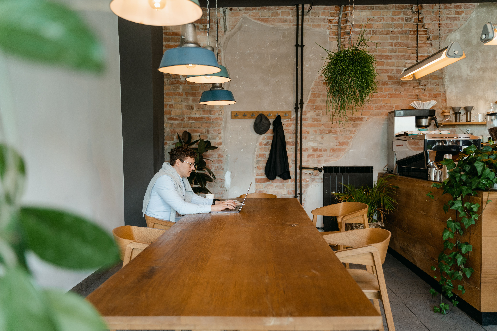

Our Origin Story
Founded in 2026, Fauna Cafe merges ethical coffee culture with biophilic design to create the ultimate digital workspace.

Founded in 2026, Fauna Cafe merges ethical coffee culture with biophilic design to create the ultimate digital workspace.

Mission
To provide the local community with sustainably sourced coffee, organic baked goods, and a dedicated, high-speed digital workspace.
Vision
To become the premier local destination where nature, productivity and ethical consumerism intersect.